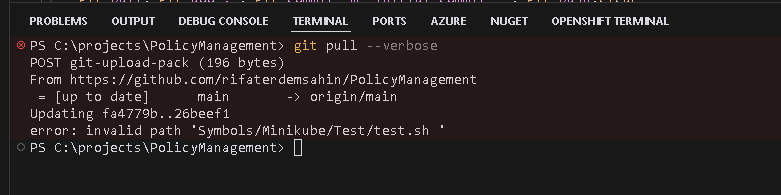
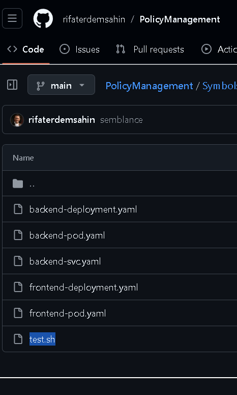
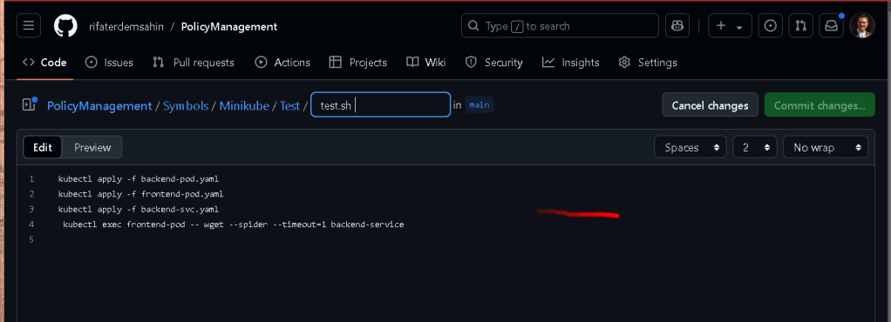
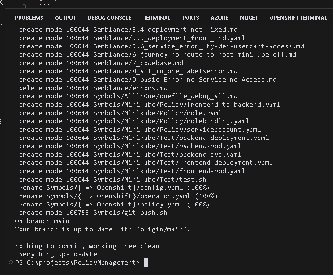

🚀 Troubleshooting Git Pull Issues: A Step-by-Step Guide to Finding Missing Paths
Running into problems with git pull not working as expected? You’re not alone! 🧩 Whether it’s due to missing paths, branch tracking, or network issues, this guide will walk you through the top reasons and solutions for resolving those pesky git pull errors.
💡 What You’ll Learn:
-
Common causes behind
git pullissues. -
Command-line solutions to troubleshoot each problem.
-
Tips to avoid similar errors in the future.
🔍 Possible Reasons Why git pull Might Not Work
1. Local Changes Not Committed 🛑
If you’ve made changes locally that aren’t committed, they might conflict with the updates you’re trying to pull. This can prevent git pull from executing.
Solution: Run git status to check for any uncommitted changes.
git status
If changes are present, commit or stash them:
git commit -m "Save local changes"
# or stash them if you're not ready to commit
git stash
2. Branch Tracking Issues 🌐
Sometimes, your branch might not be correctly linked to the remote branch, blocking git pull.
Solution: Set the upstream branch to establish tracking with the remote branch.
git branch --set-upstream-to=origin/main main
This links your local main branch to origin/main.
3. Authentication Problems 🔑
If you have outdated SSH keys or credentials, git pull may fail silently or hang indefinitely.
Solution: Update your credentials. If using HTTPS, you may need to re-enter your username and password or authentication token. If using SSH, ensure your keys are valid and accessible.
4. Git Version Compatibility 🔄
Outdated Git versions can cause unexpected issues with certain commands or configurations.
Solution: Check your Git version and update if needed. To confirm your version:
git --version
You can download the latest version of Git here.
5. Repository Corruption or Missing Files 🧩
Corruption in your .git directory or missing files can cause unpredictable command behavior.
Solution: Run git fsck to scan for issues and ensure repository integrity.
git fsck
6. Network or Timeout Issues 🌐⏱️
Network instability or connection timeouts can interrupt git pull. Running git fetch before git pull can help diagnose network issues.
Solution: Test your network connection by running:
git fetch
This pulls changes from the remote repository without merging them. If successful, proceed with git pull.
🔍 Diagnosing with git pull --verbose
If none of the above solutions fix your issue, try running git pull in verbose mode:
git pull --verbose
This option provides detailed output, which can reveal the root cause of the issue, such as missing paths or specific error messages.
📸 Screenshot

🔗 Connect with Me:
For more tips, tutorials, and tech insights, follow me on social media or reach out directly!
-
💼 LinkedIn: https://www.linkedin.com/in/rifaterdemsahin/
-
🐦 Twitter: https://x.com/rifaterdemsahin
-
🎥 YouTube: https://www.youtube.com/@RifatErdemSahin
-
💻 GitHub: https://github.com/rifaterdemsahin
Happy coding! 🎉
Debug >
PS C:\projects\PolicyManagement> git pull; git add . ; git commit -m "workstation local " ; git push
Updating fa4779b..26beef1
error: invalid path 'Symbols/Minikube/Test/test.sh '
On branch main
Your branch is behind 'origin/main' by 69 commits, and can be fast-forwarded.
(use "git pull" to update your local branch)
nothing to commit, working tree clean
To https://github.com/rifaterdemsahin/PolicyManagement.git
! [rejected] main -> main (non-fast-forward)
error: failed to push some refs to 'https://github.com/rifaterdemsahin/PolicyManagement.git'
hint: Updates were rejected because the tip of your current branch is behind
hint: its remote counterpart. If you want to integrate the remote changes,
hint: use 'git pull' before pushing again.
hint: See the 'Note about fast-forwards' in 'git push --help' for details.
PS C:\projects\PolicyManagement> git pull;
Updating fa4779b..26beef1
error: invalid path 'Symbols/Minikube/Test/test.sh '
PS C:\projects\PolicyManagement> git pull;
Updating fa4779b..26beef1
error: The following untracked working tree files would be overwritten by merge:
Symbols/Minikube/Test/test.sh
Please move or remove them before you merge.
Aborting
PS C:\projects\PolicyManagement> git pull;
Updating fa4779b..26beef1
error: invalid path 'Symbols/Minikube/Test/test.sh '
PS C:\projects\PolicyManagement>
Source was at at destination and both environments not lining up
The error message invalid path 'Symbols/Minikube/Test/test.sh ' usually appears when there’s an issue with the file path due to characters or naming that are not compatible with Windows. In this case, it looks like there may be an extra space at the end of the filename (test.sh) which is causing issues on the Windows filesystem.
Here’s how you might resolve this:
1. Check and Clean Up the Path on a UNIX-based System
Since Windows cannot handle certain characters or spaces in filenames, a quick way to fix this issue is to check out the repository on a Linux or macOS system and clean up the filenames.
- On a UNIX-based system (Linux or macOS), clone the repository:
git clone
- Navigate to the problematic file:
cd
- Rename the file to remove the trailing space:
git mv "test.sh " "test.sh"
- Commit and push the changes:
git commit -m "Fix invalid path by removing trailing space"
git push
Once you have fixed the file path on the UNIX system, you should be able to pull the updated repository on your Windows system without any issues.
2. Use a Git Command to Ignore Problematic Files Temporarily
If you cannot access a UNIX system, another approach would be to attempt a sparse-checkout and ignore the problematic files. However, this is more of a temporary workaround and may not fully solve the issue if you need to work with those files on Windows.
Let me know if you’d like guidance on this alternative approach.
Can not be seen from here

Can see the error on the browser

Link > https://github.com/rifaterdemsahin/PolicyManagement/edit/main/Symbols/Minikube/Test/test.sh%20
Error Fixed after removing the file at the source

Imported from rifaterdemsahin.com · 2025